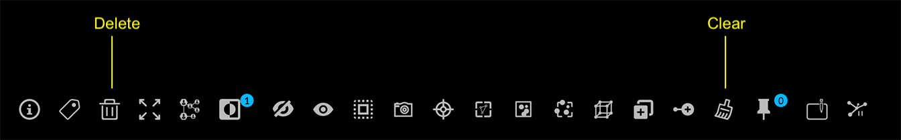
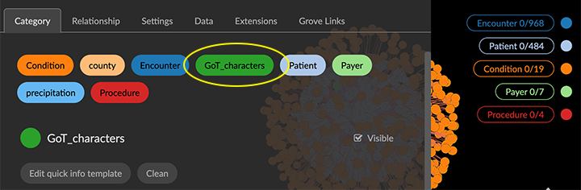
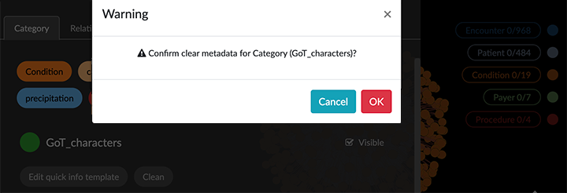

Deleting Data Deleting data from the project space is easily done. You can: Delete selected nodes and edges. Clear all data from the project. Clear unused category labels from the Project panel when no nodes of that category remain in your project. Deleting data in the graph space does not delete the data you pulled from a Neo4j database. The data model persists, and the Categories and Relationships tabs in the Project panel still list your defined entity labels. Editing and transformations done in your GraphXR project are lost when you exit a project unless you save the data. You can save a persistent data view in the project, export data to Neo4j, export a data view or snapshot archive or export data as CSV or Excel files. Delete Selected Nodes To delete a data selection: Select data using any method, and select the Delete (trash can)icon on the right-click menu or toolbar (or press del or backspace). Clear All Data To clear all data from a project: Click the Clear toolbar icon (Ctrl + Shift + C).  You can use Ctrl+Z to immediately undo a Delete or Clear action. Clean Unused Category Labels The Project panel retains category labels even when no nodes of that category remain in your project. You can use the Clean button to clean out unused labels. To remove unused category labels: Open the Project panel, select the category bubble, and click the Clean button.  In the warning dialog, click OK to confirm removal of the category label. 